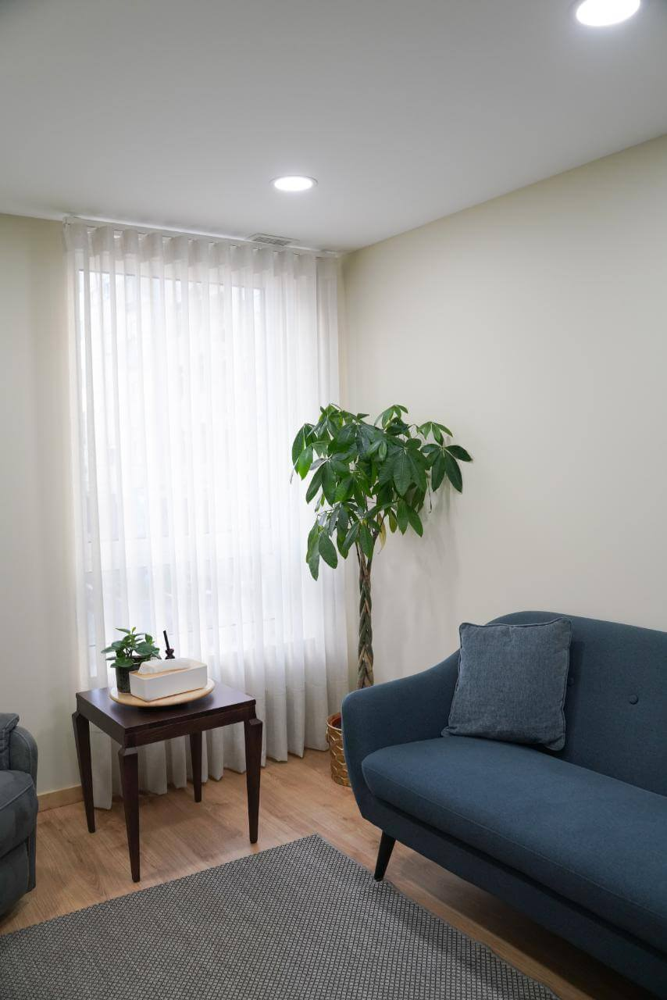
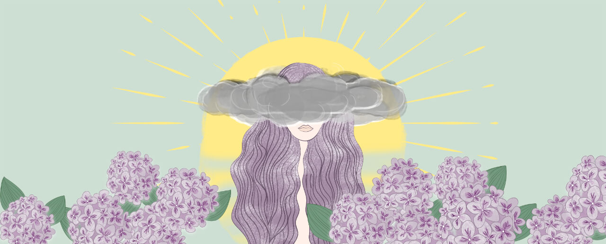
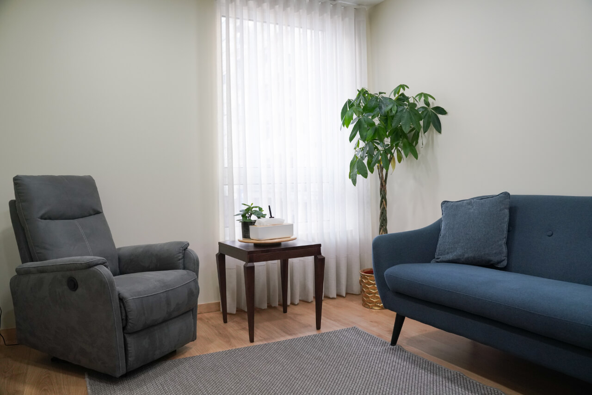

Psicólogo em Barcelos - Método Consciência
A Única Clínica em Barcelos com Método Exclusivo
Somos a única clínica em Barcelos especializada no Método Consciência, combinando EMDR, Hipnose Clínica e Terapia Mente-Corpo para tratar a origem dos seus problemas.
Método Consciência
Abordagem exclusiva que trata a origem, não apenas os sintomas
EMDR Barcelos
Especialização em trauma e stress pós-traumático
Hipnose Clínica
Tratamento de ansiedade, fobias e desenvolvimento pessoal
Por que Escolher o Espaço Consciência em Barcelos?
A Referência em Psicoterapia na Região
Vantagens Exclusivas em Barcelos
- Única clínica com Método Consciência em Barcelos
- Especialização em EMDR - poucos profissionais na região
- Hipnose Clínica certificada - técnica avançada
- Equipe experiente com +15 anos de prática
- Localização central - fácil acesso
- Horários flexíveis - adaptados às suas necessidades
Diferencial Competitivo
Enquanto outros psicólogos em Barcelos focam apenas nos sintomas, nós tratamos a origem dos seus problemas através do nosso método exclusivo, garantindo resultados mais duradouros e eficazes.

Problemas que Tratamos em Barcelos
Especialização em Diversas Áreas da Saúde Mental
Ansiedade em Barcelos
Tratamento especializado para ansiedade generalizada, ataques de pânico e fobias específicas.
- Ansiedade social
- Ataques de pânico
- Fobias específicas
- Ansiedade generalizada
Depressão em Barcelos
Abordagem integrativa para superar a depressão e recuperar o bem-estar emocional.
- Depressão major
- Distimia
- Depressão pós-parto
- Luto patológico
Trauma e EMDR
Única clínica em Barcelos especializada em EMDR para tratamento de trauma.
- Stress pós-traumático
- Trauma de infância
- Acidentes
- Violência doméstica
Terapia de Casal
Método Consciência aplicado a relacionamentos e terapia de casal em Barcelos.
- Problemas de comunicação
- Infidelidade
- Crise no relacionamento
- Preparação para casamento
Desenvolvimento Pessoal
Hipnose clínica e coaching para crescimento pessoal e profissional.
- Autoestima
- Confiança
- Objetivos de vida
- Mudança de hábitos
Stress Profissional
Tratamento especializado para burnout e stress relacionado com o trabalho.
- Burnout
- Stress laboral
- Conflitos no trabalho
- Pressão profissional
O Método Consciência em Barcelos
Exclusivo e Revolucionário

A Única Abordagem do Género em Barcelos
O Método Consciência é exclusivo do Espaço Consciência e não encontrará nada semelhante em Barcelos. Esta abordagem revolucionária combina:
1. EMDR (Eye Movement Desensitization and Reprocessing)
Técnica cientificamente comprovada para processamento de traumas e memórias perturbadoras.
2. Hipnose Clínica
Acesso ao inconsciente para mudanças profundas e duradouras.
3. Terapia Mente-Corpo
Integração entre aspectos psicológicos e físicos do bem-estar.
4. Neurobiologia Interpessoal
Regulação emocional baseada nas neurociências.
Conhecer o MétodoA Nossa Clínica em Barcelos
Localização Central e Acessível
Informações da Clínica
Endereço:
Avenida Alcaides Faria 333B Sala 3
4750-106 Arcozelo, Barcelos
Horário de Funcionamento:
Segunda a Sexta: 10:00 - 19:00
Sábados: Sob marcação
Contactos:
Telefone: +351 935 522 267
Email: barcelos@espacoconsciencia.pt
Como Chegar
- De carro: Estacionamento gratuito nas proximidades
- Transportes públicos: Paragem de autocarro a 2 minutos
- A pé: Centro de Barcelos a 10 minutos

O que Dizem os Nossos Pacientes de Barcelos
Transformações Reais, Resultados Duradouros
"Procurei ajuda em Barcelos durante anos sem sucesso. O Método Consciência mudou completamente a minha vida. Finalmente encontrei a origem dos meus problemas de ansiedade."
- Maria, 34 anos, Barcelos"A terapia EMDR foi revolucionária para mim. Depois de um acidente, não conseguia sair de casa. Hoje sinto-me livre e confiante novamente."
- João, 28 anos, Barcelos"O profissionalismo e a eficácia do tratamento superaram todas as minhas expectativas. Recomendo a todos em Barcelos que precisem de ajuda psicológica."
- Ana, 42 anos, BarcelosPerguntas Frequentes - Psicólogo Barcelos
Esclarecemos as Suas Dúvidas
Quanto custa uma consulta de psicologia em Barcelos?
Os nossos preços são competitivos e transparentes. Contacte-nos para informações detalhadas sobre valores e possibilidades de pagamento.
Qual a diferença para outros psicólogos em Barcelos?
Somos a única clínica em Barcelos com o Método Consciência exclusivo, combinando EMDR, Hipnose Clínica e outras técnicas avançadas.
Quanto tempo demora o tratamento?
Cada caso é único, mas o nosso método foca na origem dos problemas, permitindo resultados mais rápidos e duradouros que abordagens tradicionais.
Atendem urgências em Barcelos?
Sim, temos disponibilidade para casos urgentes. Contacte-nos e faremos o possível para agendar uma consulta no menor tempo possível.
Fazem terapia de casal em Barcelos?
Sim, oferecemos terapia de casal com o Método Consciência, uma abordagem única para resolver problemas relacionais na origem.
Têm estacionamento?
Sim, há estacionamento gratuito nas proximidades da clínica, facilitando o acesso dos nossos pacientes.
Marque a Sua Consulta em Barcelos
Dê o Primeiro Passo para a Sua Transformação
Contacte-nos Agora
Ligue diretamente: +351 935 522 267
Atendimento de Segunda a Sexta, das 10:00 às 19:00